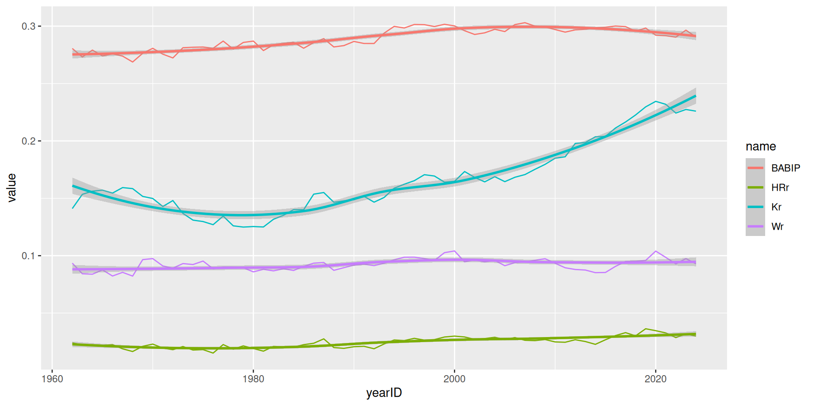
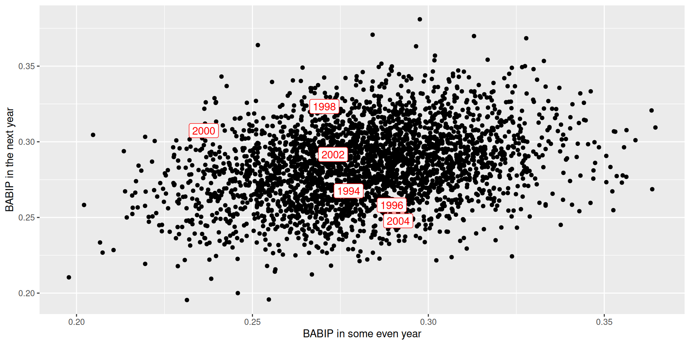
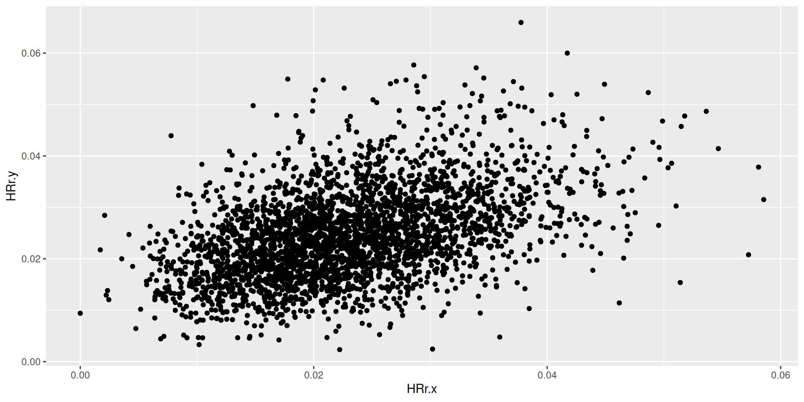
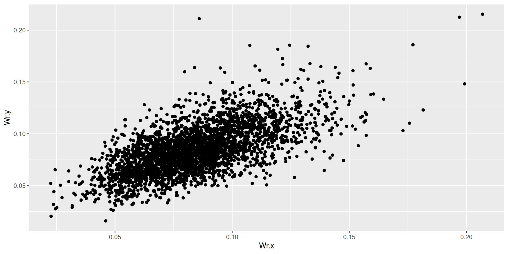
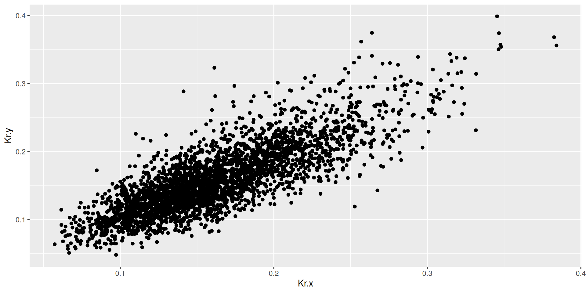

DIPS
SDS 355
Prof. Baumer
September 24, 2025
DIPS
The claim
There is little if any difference among major-league pitchers in their ability to prevent hits on balls hit in the field of play.
–Voros McCracken (2001)
Who is Voros McCracken?

Voros McCracken is a student living in Chicago.
Outcomes of a plate appearance
- Balls in Play:
- Hits
- Outs
- Errors
- Balls not in play (aka “Three true outcomes”):
- Strikeouts
- Walks / Hit by Pitch
- Home Runs
Three True Outcomes


True outcomes over time

BABIP

Computing BABIP
True outcomes plot
Another claim
There is little correlation between what a pitcher does one year in the stat and what he will do the next.
The pitchers who are the best at preventing hits on balls in play one year are often the worst at it the next.
- Skill vs. luck
Autocorrelation
Pitcher-year pairs
Paired data
# A tibble: 6 × 6
# Groups: playerID [3]
playerID yearID next_yearID next_yearID.y BABIP.x BABIP.y
<chr> <int> <dbl> <dbl> <dbl> <dbl>
1 aasedo01 1978 1979 1980 0.293 0.290
2 abbotgl01 1974 1975 1976 0.264 0.255
3 abbotgl01 1978 1979 1980 0.305 0.275
4 abbotgl01 1980 1981 1982 0.269 0.249
5 abbotji01 1990 1991 1992 0.316 0.277
6 abbotji01 1992 1993 1994 0.297 0.279BABIP autocorrelation
BABIP.x BABIP.y
BABIP.x 1.0000000 0.2913783
BABIP.y 0.2913783 1.0000000Visualizing BABIP autocorrelation
No cross-correlation
There is no significant cross-correlation. That is, a high number of home runs allowed doesn’t really mean anything in determining how many hits per balls in play the pitcher will allow.
Cross-correlations
| Kr.x | Wr.x | HRr.x | BABIP.x | BABIP.y | |
|---|---|---|---|---|---|
| Kr.x | 1.00 | 0.10 | 0.09 | 0.06 | 0.04 |
| Wr.x | 0.10 | 1.00 | -0.01 | -0.02 | -0.01 |
| HRr.x | 0.09 | -0.01 | 1.00 | 0.08 | 0.12 |
| BABIP.x | 0.06 | -0.02 | 0.08 | 1.00 | 0.29 |
| BABIP.y | 0.04 | -0.01 | 0.12 | 0.29 | 1.00 |
Reliability

Home run rate
Walk rate
Strikeout rate
Autocorrelations
| Kr.x | Wr.x | HRr.x | Kr.y | Wr.y | HRr.y | |
|---|---|---|---|---|---|---|
| Kr.x | 1.00 | 0.10 | 0.09 | 0.82 | 0.08 | 0.13 |
| Wr.x | 0.10 | 1.00 | -0.01 | 0.13 | 0.64 | -0.05 |
| HRr.x | 0.09 | -0.01 | 1.00 | 0.11 | -0.06 | 0.46 |
| Kr.y | 0.82 | 0.13 | 0.11 | 1.00 | 0.05 | 0.07 |
| Wr.y | 0.08 | 0.64 | -0.06 | 0.05 | 1.00 | -0.02 |
| HRr.y | 0.13 | -0.05 | 0.46 | 0.07 | -0.02 | 1.00 |
FIP

What about batters?
| Kr.x | Wr.x | HRr.x | Kr.y | Wr.y | HRr.y | BABIP.x | BABIP.y | |
|---|---|---|---|---|---|---|---|---|
| Kr.x | 1.00 | 0.20 | 0.50 | 0.88 | 0.22 | 0.48 | 0.14 | 0.12 |
| Wr.x | 0.20 | 1.00 | 0.36 | 0.21 | 0.77 | 0.34 | 0.02 | -0.01 |
| HRr.x | 0.50 | 0.36 | 1.00 | 0.49 | 0.37 | 0.76 | -0.03 | -0.05 |
| Kr.y | 0.88 | 0.21 | 0.49 | 1.00 | 0.21 | 0.49 | 0.11 | 0.10 |
| Wr.y | 0.22 | 0.77 | 0.37 | 0.21 | 1.00 | 0.38 | 0.02 | 0.04 |
| HRr.y | 0.48 | 0.34 | 0.76 | 0.49 | 0.38 | 1.00 | -0.01 | -0.03 |
| BABIP.x | 0.14 | 0.02 | -0.03 | 0.11 | 0.02 | -0.01 | 1.00 | 0.46 |
| BABIP.y | 0.12 | -0.01 | -0.05 | 0.10 | 0.04 | -0.03 | 0.46 | 1.00 |

SDS 355